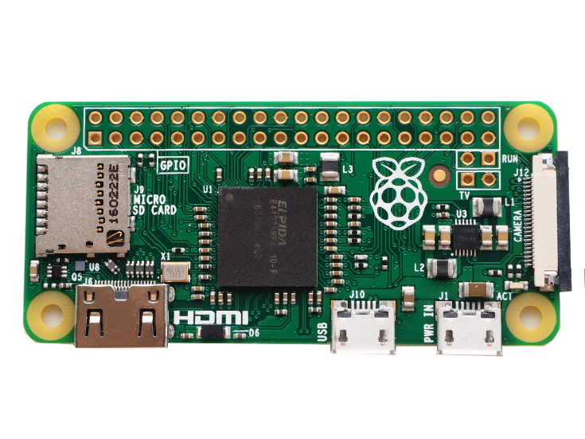

# Less-Pain # Embedded Systems # with Elixir and Nerves ---- ElixirConf US 2018 - 2018-09-04 + 05 Greg Mefford & Tim Mecklem  <!-- .element: class="plain" style="height: 6em" -->  <!-- .element: class="plain" style="height: 6em" -->
# Thanks, Bleacher Report!  <!-- .element: class="plain" style="height: 10em" -->  <!-- .element: class="plain" style="height: 10em" -->
# Thanks, Gaslight!  <!-- .element: class="plain" style="height: 10em" -->  <!-- .element: class="plain" style="height: 10em" -->
# Code of Conduct 💜 http://lonestarelixir.com/2018/code-of-conduct
# Tentative schedule 🕘 * 7:30 AM - 8:30 AM (1:00) * Registration/Breakfast * 8:30 AM - 10:00 AM (1:30) * Welcome / Overview * Build some Hardware * Pre-Burned Firmware! * Project Overview * 10:00 AM - 10:30 AM (0:30) * Break (and help resolve issues)
# Tentative schedule 🕘 * 10:30 AM - 12:00 PM (1:30) * Elixir for Embedded * Nerves Concepts * Streaming Video * Application Structure * Custom Nerves Systems * 12:00 PM - 1:30 PM (1:30) * Lunch (and explore Buildroot)
# Tentative schedule 🕘 * 1:30 PM - 3:00 PM (1:30) * Scanning Barcodes * GraphQL APIs * 3:00 PM - 3:30 PM (0:30) * Break * 3:30 PM - 5:00 PM (1:30) * Adding Phoenix * Phoenix Channels * GraphQL Subscriptions * Play / Lab time
# For Today * Raspberry Pi Zero W + case * Pi camera v2 * Zero-size camera ribbon cable * Lens adjustment tool * 16 GB class 10 MicroSD card * MicroSD card reader * Male USB to MicroUSB cable * QR codes and Stickers!
# For Later * MicroUSB OTG cable * HDMI to Mini HDMI cable * Standard-size camera ribbon cable * 5V 2.5A MicroUSB AC power adapter * 40-pin header * Heatsink
# Electronics Safety * Touch some grounded metal (like your laptop) * It's technically not fine, but it'll probably be fine * Be gentle with the ribbon cables/connectors
# Eye  <!-- .element: class="plain" style="height: 14em" -->
# Omni Eye  <!-- .element: class="plain" style="height: 14em" --> <br/> [https://github.com/GregMefford/omni_eye](https://github.com/GregMefford/omni_eye) <!-- .element: class="attribution" -->
# Streaming Video with *Picam*  <!-- .element: class="plain" style="height: 13em" --> <br/> [https://github.com/electricshaman/picam](https://github.com/electricshaman/picam) <!-- .element: class="attribution" -->
# Scanning Barcodes with *Zbar*  <!-- .element: class="plain" style="height: 13em" --> <br/> [https://github.com/GregMefford/zbar-elixir](https://github.com/GregMefford/zbar-elixir) <!-- .element: class="attribution" -->
# GraphQL Queries, Mutations # and Subscriptions  <!-- .element: class="plain" style="height: 10em" --> <br/> [Live APIs with GraphQL Subscriptions - Bruce Williams and Ben Wilson](https://youtu.be/PEckzwggd78) <!-- .element: class="attribution" -->
# Phoenix Channels  <!-- .element: class="plain" style="height: 12em" --> Notes: Phoenix Channels also offer a great way to easily connect your devices to a server, whether it's an app running in a browser or a headless sensor device in the field.
# *`nerves_init_gadget`*  <!-- .element: class="plain" style="height: 13em" --> <br/> [https://github.com/nerves-project/nerves_init_gadget](https://github.com/nerves-project/nerves_init_gadget) <!-- .element: class="attribution" -->
# *`nerves_init_gadget`*  <!-- .element: class="plain" style="height: 13em" --> <br/> [https://github.com/nerves-project/nerves_init_gadget](https://github.com/nerves-project/nerves_init_gadget) <!-- .element: class="attribution" -->
# *`nerves_init_gadget`* * Config Ethernet and Serial over USB * DHCP Server * mDNS Responder (`nerves.local`) * Manage Erlang Distribution * `mix firmware.push` over SSH * SSH console to IEx prompt
# Try it on your Device ``` bash $ open http://nerves.local/ # Try scanning a barcode (you may need to reload # the browser page after the device boots fully) $ open http://nerves.local/graphiql # Try running a query like: # query { # config { # size { # width # height # } # } # } ```
# Break from 10:00 to 10:30 AM * How is the pace? * Any questions? * Play with your shiny new hardware * Mingle in the hall * Get a snack, maybe?
# Elixir 💜 Embedded Notes: * At Code BEAM -> don't need convincing. * Let's talk about _reasons_ BEAM is a good choice, * in case hadn't thought about it * or want to explain it to someone else.
# Elixir 💜 Embedded * *BEAM is Embedded-First* * Baked-In Fault-Tolerance * Light-Weight Concurrency * Binary Pattern-Matching * Integrated IoT Platform
# BEAM is *Embedded-First* ## Ericsson *ADX301* 10 Gbps - 160 Gbps Telecom Switch System  <!-- .element: class="plain" style="height: 12em" --> Notes: * Erlang/OTP born as control plane these telecom switches * Scalable total throughout by adding cards and cabinets * The Erlang part is to control all the ASICs on the data path
# BEAM is *Embedded-First* ## Ericsson *ADX301* Erlang/OTP-powered Control Plane  <!-- .element: class="plain" --> Notes: * I wasn't able to find specs on this CPU's speed * I'd guess it's less-powerful than a modern Raspberry Pi * No surprise that we can run powerful embedded systems with Elixir
# Elixir 💜 Embedded * BEAM is Embedded-First * *Baked-In Fault-Tolerance* * Light-Weight Concurrency * Binary Pattern-Matching * Integrated IoT Platform Notes: * OTP brings FT primitives that we don't have to design
 <!-- .element: class="plain fragment" style="height: 14em" --> Notes: * Not what they meant by "let it crash." * (fragment): Crash screens c/o Kevlin Henney * There are plenty more where these came from
# Elixir 💜 Embedded * BEAM is Embedded-First * Baked-In Fault-Tolerance * *Light-Weight Concurrency* * Binary Pattern-Matching * Integrated IoT Platform Notes: * BEAM gives us baked-in concurrency primitives * via processes and message-passing
# Light-weight *concurrency* * Lots of tiny processes * Process-level fault-tolerance <div slye="clear: both" /> <div style="float: left"> <p style="margin-bottom: -36px">4 Cores</p> <img src="img/rpi3.png" class="plain" style="width: 950px" /> </div> <div style="float: right"> <p style="margin-bottom: -36px">96 Cores / 192 Threads</p> <img src="img/r930.png" class="plain" style="width: 950px" /> </div> Notes: * Allows us to easily make use of all cores * Whether it's 4 in your Raspberry Pi * Or a bunch of hyper-threaded cores in a server
# Light-weight *concurrency* * Per-Process Garbage-Collection * Immutable Data Structures  <!-- .element: class="plain" style="height: 12em"--> <br/> [Hamidreza Soleimani's Blog - Erlang Garbage Collection Details and Why It Matters](https://hamidreza-s.github.io/erlang%20garbage%20collection%20memory%20layout%20soft%20realtime/2015/08/24/erlang-garbage-collection-details-and-why-it-matters.html) <!-- .element: class="attribution" --> Notes: * In particular, I want to look more closely at these two: * Per-process garbage-collection * Immutable data structures
# Elixir 💜 Embedded * BEAM is Embedded-First * Baked-In Fault-Tolerance * Light-Weight Concurrency * *Binary Pattern-Matching* * Integrated IoT Platform Notes: * Binary pattern-mathing is super-cool for embedded
# Elixir 💜 Embedded *Binary* Pattern-Matching ``` elixir def decode(<<op::3, addr::6, data::7>>), do: {op, addr, data} # ... decode(<<0b01010101, 0b01010011>>) # => {2, 42, 83} ``` Notes: Let's pretend that we have an data sheet for an electronics component that says we need to decode these 16 bits into * a 3-bit operation code, * a 6-bit address value, * and a 7-bit data value. It's really easy to just pattern-match like this, and you're done.
# Elixir 💜 Embedded *Binary* Pattern-Matching ``` elixir def decode(<<0::2, op::1, addr::9, data::4>>), do: # ... def decode(<< op::3, addr::6, data::7>>), do: # ... # ... decode(<<0b00010101, 0b01010011>>) # => {0, 341, 3} decode(<<0b01010101, 0b01010011>>) # => {2, 42, 83} ``` Notes: But oh, by the way, the data sheet also says that if the first two bits are zeros, then you're in "extended address" mode, so you should interpret the rest of the data as: * a 1-bit operation code, * a 9-bit address value, * and a 4-bit data value. No problem, just add another function head. This example is obviously contrived, but it's so nice to be able to do this instead of procedural bitwise operations.
# Elixir 💜 Embedded * BEAM is Embedded-First * Baked-In Fault-Tolerance * Light-Weight Concurrency * Binary Pattern-Matching * *Integrated IoT Platform* Notes: * Elixir is also a great choice for an integrated IoT platform.
# Integrated IoT Platform  <!-- .element: class="plain" style="height: 900px" --> Notes: This is what it looks like when all your embedded devices decide to connect to your server at once.
# Integrated IoT Platform  <!-- .element: class="plain" style="height: 900px" --> Notes: * If you want to, you can build a whole stack using Elixir * On the client and the server side
# Integrated IoT Platform  <!-- .element: class="plain" style="height: 900px" --> Notes: * Using Phoenix and Channels on the back-end * to talk to Elixir and Nerves on a headless device * Or to a JavaScript client running on a kiosk-style device
# Options for Embedding Elixir  <!-- .element: class="plain" --> Notes:
 <!-- .element: class="plain" style="height: 4em"-->  <!-- .element: class="plain" style="height: 4em"-->  <!-- .element: class="plain" style="height: 4em"--> * Well of course that works... * Deployment / Packaging * Administration * Long boot times * Read/Write filesystem Notes:
# GRiSP * Bare-metal BEAM 🤘 * Purpose-built hardware * Real-time  <!-- .element: class="plain" style="height: 800px" --> Notes:
 <!-- .element: class="plain" style="height: 6em" --> Craft and deploy bulletproof embedded software in Elixir Notes:
 <!-- .element: class="plain" style="height: 6em" --> * Minimal Linux with Buildroot * Commodity or custom hardware * BEAM as "operating system" * Read-only filesystem * Firmware artifacts Notes:

# Support for *Lots of Targets*  <!-- .element: class="plain" -->  <!-- .element: class="plain" -->  <!-- .element: class="plain" -->  <!-- .element: class="plain" -->  <!-- .element: class="plain" -->  <!-- .element: class="plain" --> Notes: Nerves currently supports a bunch of popular and readily-available target hardware, like the Raspberry Pi and Beaglebone families, and the Lego EV3, which is really neat.
# Nerves Platform App-level fault-tolerance with *Shoehorn* > Get your boot on! * Configure network * Start management tooling * Format storage partitions * ... Then start your app Notes: We also have Bootloader, which can be used to ensure the device comes up to a known-working state before trying to start your application. This allows for some limited remote diagnostics or firmware update, even if your application fails to start for some reason.
# Nerves Platform App-level fault-tolerance with *Shoehorn* > *Shoehorn* used to be called *Bootloader*. > That was confusing because it's not actually a bootloader.
# Nerves 💜 Elixir ```bash $ mix nerves.new # Start a Project $ mix deps.get # Download Artifacts $ mix firmware # Cross-Compile your Code $ mix firmware.burn # Burn your SD card # ... or ... $ mix firmware.push # Remote Firmware Update ```
# Overwhelmingly # *welcoming* and *helpful* # community  <!-- .element: class="plain" --> Notes: So I decided to focus on building a welcoming and helpful community around Nerves. For example, I started to manually and individually welcome each new person to our Slack channel and invite them to get involved.
Notes: The community has grown a lot. We have over 1500 members in our Slack channel today. I see that as the tip of the iceberg. There are probably many more people that we never hear from because they don't use Slack. We've recently been working on having a stronger presence in other spaces like the Elixir Forum and Stack Overflow so that we can do better at meeting people where they are.
# You *Can* Contribute  <!-- .element: class="plain" style="height: 10em"--> Notes:
# Wanted to *get involved* ## Even though I was *new to Elixir* Notes: I really wanted to get more involved in the Nerves project, even though I was pretty new to Elixir at the time.
# Wanted to *get involved* ## ~~Even though I was new to Elixir~~ ## *Because* I was new to Elixir Notes: And when I thought about it, I realized that I had something to contribute to the project _because_ I was new to Elixir.
# Poncho Project  <!-- .element: class="plain" style="height: 13em" --> <br/> [http://embedded-elixir.com/post/2017-05-19-poncho-projects/](http://embedded-elixir.com/post/2017-05-19-poncho-projects/) <!-- .element: class="attribution" -->
# Poncho Style ``` bash $ mkdir omni_eye && cd omni_eye $ mix new eye --sup $ mix phx.new eye_ui --no-ecto $ mix nerves.new eye_fw ``` ``` bash omni_eye ├── eye ├── eye_fw └── eye_ui ```
# *Fake Camera* for Dev and Test ``` elixir # eye/config/config.exs config :picam, camera: Picam.FakeCamera ``` ``` elixir # eye_ui/config/config.exs config :picam, camera: Picam.FakeCamera ``` ``` elixir # eye_fw/config/host.exs config :picam, camera: Picam.FakeCamera ```
# *Real Camera* on Target Device ``` elixir # eye_fw/config/rpi0_zbar.exs config :picam, camera: Picam.Camera ```
# `eye` Application in `iex`  <!-- .element: class="plain" style="width: 95%" -->
# `eye_ui` Application in `iex`  <!-- .element: class="plain" style="width: 1400px" -->  <!-- .element: class="plain" style="width: 1400px" -->
# Omni Eye  <!-- .element: class="plain" style="height: 14em" --> <br/> [https://github.com/GregMefford/omni_eye](https://github.com/GregMefford/omni_eye) <!-- .element: class="attribution" -->
# Let's Stream some Video ## with *Picam*  <!-- .element: class="plain" style="height: 13em" --> <br/> [https://github.com/electricshaman/picam](https://github.com/electricshaman/picam) <!-- .element: class="attribution" -->
# Shortcut Check out the `step1` branch from the `omni_eye` repo. ``` bash $ git clone https://github.com/GregMefford/omni_eye.git $ cd omni_eye $ git checkout step1 ``` The following slides show how we arrived there step-by-step. [https://github.com/GregMefford/omni_eye](https://github.com/GregMefford/omni_eye) <!-- .element: class="attribution" -->
# Getting Started ``` bash $ mkdir omni_eye $ cd omni_eye $ mix new eye --sup $ mix nerves.new eye_fw ```
# Getting Started ``` bash omni_eye ├── eye │  ├── README.md │  ├── config │  ├── lib │  ├── mix.exs │  └── test └── eye_fw ├── README.md ├── _build ├── config ├── deps ├── lib ├── mix.exs ├── mix.lock.host ├── rel └── test ```
``` elixir # eye/mix.exs defp deps do [ {:picam, "~> 0.2.0"}, {:cowboy, "~> 1.0.0"}, {:plug, "~> 1.0"} ] end ```
``` elixir # eye_fw/mix.exs defp deps do [ {:nerves, "~> 0.10.0", runtime: false}, {:distillery, "~> 1.5"}, {:eye, path: "../eye"} ] ++ deps(@target) end defp deps("host"), do: [] defp deps(target) do [ {:shoehorn, "~> 0.2"}, {:nerves_runtime, "~> 0.5"}, { :nerves_init_gadget, github: "nerves-project/nerves_init_gadget", ref: "dhcp" }, ] ++ system(target) end ```
# *`nerves_init_gadget`* * Config Ethernet and Serial over USB * DHCP Server * mDNS Responder (`nerves.local`) * Manage Erlang Distribution * `mix firmware.push` over SSH * SSH console to IEx prompt
``` elixir # eye_fw/mix.exs defp system("rpi0") do [{:nerves_system_rpi0, "~> 0.21.0", runtime: false}] end defp system(target) do Mix.raise "Unsupported MIX_TARGET: #{target}" end ```
``` elixir # eye/lib/eye/application.ex defmodule Eye.Application do use Application def child_spec_no_args(module) do %{id: module, start: {module, :start_link, []}} end def start(_type, _args) do children = [ child_spec_no_args(Picam.Camera), Plug.Adapters.Cowboy.child_spec(:http, Eye.Router, [], [port: 80]) ] opts = [strategy: :one_for_one, name: Eye.Supervisor] Supervisor.start_link(children, opts) end end ```
``` elixir # eye/lib/eye/router.ex defmodule Eye.Router do use Plug.Router plug :match plug :dispatch # ... end ```
``` elixir # eye/lib/eye/router.ex defmodule Eye.Router do # ... get "/" do markup = """ <!DOCTYPE html> <html> <head> <meta charset="UTF-8" /> <title>Eye - Video Stream</title> </head> <body> <img src="video.mjpg" /> </body> </html> """ conn |> put_resp_header("Content-Type", "text/html") |> send_resp(200, markup) end #... end ```
``` elixir # eye/lib/eye/router.ex defmodule Eye.Router do #... forward "/video.mjpg", to: Eye.JPEGStreamer match _ do send_resp(conn, 404, "Oops. Try /") end end ```
``` elixir # eye/lib/eye/jpeg_streamer.ex defmodule Eye.JPEGStreamer do import Plug.Conn @behaviour Plug @boundary "w58EW1cEpjzydSCq" def init(opts), do: opts def call(conn, _opts) do Eye.Camera.configure() conn |> put_resp_header("Age", "0") |> put_resp_header("Cache-Control", "no-cache, private") |> put_resp_header("Pragma", "no-cache") |> put_resp_header("Content-Type", "multipart/x-mixed-replace; boundary=#{@boundary}") |> send_chunked(200) |> send_pictures end # ... end ```
``` elixir # eye/lib/eye/jpeg_streamer.ex defmodule Eye.JPEGStreamer do # ... defp send_pictures(conn) do conn |> send_picture() |> send_pictures() end defp send_picture(conn) do jpg = Eye.Camera.next_frame size = byte_size(jpg) header = "------#{@boundary}\r\nContent-Type: image/jpeg\r\nContent-length: #{size}\r\n\r\n" footer = "\r\n" with {:ok, conn} <- chunk(conn, header), {:ok, conn} <- chunk(conn, jpg), {:ok, conn} <- chunk(conn, footer), do: conn end end ```
``` elixir # eye/lib/eye/camera.ex defmodule Eye.Camera do require Logger def configure do Logger.info("Configuring camera") Picam.set_quality(10) Picam.set_size(1280, 720) Picam.set_fps(30) end def next_frame do Picam.next_frame() end end ```
``` elixir # eye_fw/config/config.exs config :shoehorn, init: [:nerves_runtime, :nerves_init_gadget], app: Mix.Project.config()[:app] # VVV Make sure you actually have an SSH key generated VVV config :nerves_firmware_ssh, authorized_keys: [ File.read!(Path.join(System.user_home!, ".ssh/id_rsa.pub")) ] # ^^^ Before you burn your firmware to your SD card ^^^ config :nerves_init_gadget, address_method: :static ```
``` bash $ cd eye_fw $ export MIX_TARGET=rpi0 $ mix deps.get $ mix firmware # Extract your SD card from the Zero # Connect it to your laptop $ mix firmware.burn # Put it back into your Zero ```  <!-- .element: class="plain" style="height: 10em" -->  <!-- .element: class="plain" style="height: 10em" -->
# Scanning Barcodes with *`zbar`*  <!-- .element: class="plain" style="height: 13em" --> <br/> [https://github.com/GregMefford/zbar-elixir](https://github.com/GregMefford/zbar-elixir) <!-- .element: class="attribution" -->
# Custom Nerves Systems  <!-- .element: class="plain" style="height: 13em" --> <br/> [https://hexdocs.pm/nerves/systems.html#customizing-your-own-nerves-system](https://hexdocs.pm/nerves/systems.html#customizing-your-own-nerves-system) <!-- .element: class="attribution" -->
# Shortcut Check out the `step2` branch from the `omni_eye` repo. ``` bash $ git checkout step2 ``` The following slides show how we arrived there step-by-step.
``` bash # Leave the eye_fw directory $ cd .. $ git clone https://github.com/nerves-project/nerves_system_rpi0.git $ mv nerves_system_rpi0 system_rpi0_zbar $ cd system_rpi0_zbar $ mix deps.get $ mix nerves.system.shell Nerves /nerves/build > make menuconfig ```  <!-- .element: class="plain" -->
``` bash Nerves /nerves/build > make save-defconfig Nerves /nerves/build > exit $ git diff ```
``` bash $ cd ../omni_eye/eye_fw $ export MIX_TARGET=rpi0_zbar ``` ``` elixir # eye_fw/mix.exs defp system("rpi0_zbar") do [{:nerves_system_rpi0_zbar, path: "../../system_rpi0_zbar", runtime: false}] end defp system(target) do Mix.raise "Unsupported MIX_TARGET: #{target}" end ``` ``` bash $ mix firmware ```
``` bash $ mix firmware.push 192.168.24.1 ```  <!-- .element: class="plain" -->
# *`rootfs_overlay`* ## Do you Need a Custom System? ``` elixir # eye_fw/config/config.exs config :nerves, :firmware, rootfs_overlay: "rootfs_overlay" ```
# Lunch: 12:00 to 1:30 AM * Poke around in the Buildroot menus * Brainstorm projects * How is the pace? * Any questions?
# Let's Actually # Scan some Barcodes!  <!-- .element: class="plain" -->
# Shortcut Check out the `step3` branch from the `omni_eye` repo. ``` bash $ git checkout step3 ``` The following slides show how we arrived there step-by-step.
``` elixir # eye/mix.exs defmodule Eye.MixProject do # ... defp deps do [ {:picam, "~> 0.2.0"}, {:zbar, "~> 0.1.0"}, {:cowboy, "~> 1.0.0"}, {:plug, "~> 1.0"}, {:poison, "~> 3.1.0"} ] end # ... end ```
``` elixir # eye/config/config.exs config :eye, port: 4000 config :picam, camera: Picam.FakeCamera config :logger, level: :debug, utc_log: true config :logger, :console, level: :debug, format: "$dateT$time [$level] $message\n" ``` ``` elixir # eye_fw/config/config.exs config :eye, port: 80 config :picam, camera: Picam.Camera config :logger, level: :info, utc_log: true config :logger, :console, level: :info, format: "$dateT$time [$level] $message\n" ```
``` elixir # eye/lib/eye/application.ex defmodule Eye.Application do # ... def start(_type, _args) do port = Application.get_env(:eye, :port) picam_camera = Application.get_env(:picam, :camera) children = [ child_spec_no_args(picam_camera), Eye.BarcodeScanner, Plug.Adapters.Cowboy.child_spec(:http, Eye.Router, [], [port: port]) ] opts = [strategy: :rest_for_one, name: Eye.Supervisor] Supervisor.start_link(children, opts) end # ... end ```
``` elixir # eye/lib/eye/barcode_scanner.ex defmodule Eye.BarcodeScanner do use GenServer alias Eye.Camera # BarcodeScanner API def next_scan(timeout \\ 10_000) do GenServer.call(__MODULE__, :next_scan, timeout) end # ... end ```
``` elixir # eye/lib/eye/barcode_scanner.ex defmodule Eye.BarcodeScanner do # ... # GenServer API def start_link(opts \\ []) do GenServer.start_link(__MODULE__, opts, name: __MODULE__) end def init(_opts) do send(self(), :scan_next_frame) {:ok, []} end def handle_call(:next_scan, from, state) do {:noreply, [from | state]} end # ... end ```
``` elixir # eye/lib/eye/barcode_scanner.ex defmodule Eye.BarcodeScanner do # ... def handle_info(:scan_next_frame, state) do {:ok, symbols} = Camera.next_frame() |> Zbar.scan() dispatch(symbols, state) send(self(), :scan_next_frame) {:noreply, []} end # Helpers defp dispatch(symbols, requests) do Enum.each(requests, & GenServer.reply(&1, symbols)) end end ```
``` elixir # eye/lib/eye/router.ex defmodule Eye.Router do # ... forward "/video.mjpg", to: Eye.JPEGStreamer get "/barcodes.json" do response = Eye.BarcodeScanner.next_scan() |> format_symbols() |> Poison.encode!() conn |> put_resp_header("Age", "0") |> put_resp_header("Cache-Control", "no-cache, private") |> put_resp_header("Pragma", "no-cache") |> put_resp_header("Content-Type", "text/json") |> send_resp(200, response) end # ... end ```
``` elixir # eye/lib/eye/router.ex defmodule Eye.Router do # ... defp format_symbols(nil), do: [] defp format_symbols(symbols) do Enum.map(symbols, & format_symbol/1) end defp format_symbol(%Zbar.Symbol{} = symbol) do symbol |> Map.delete(:__meta__) |> Map.update!(:points, & format_points/1) end defp format_points(points) do Enum.map(points, & format_point/1) end defp format_point({x, y}), do: %{x: x, y: y} end ```
# Test images  <!-- .element: class="plain" -->
# Try it in `iex` If you want to try it on your laptop you'll need `libjpeg` and `zbar` installed. ``` bash # NOTE: the zbar package brings in a bunch of # other stuff, including imagemagick $ brew install libjpeg zbar ```
# Try it in `iex` ``` bash $ cd ../eye $ mix deps.get $ iex -S mix ```  <!-- .element: class="plain" -->
# Push a firmware update ``` bash $ cd ../eye_fw $ mix deps.get $ mix firmware $ mix firmware.push 192.168.24.1 ```
# Serial console ``` bash # On OSX: $ picocom /dev/tty.usbmodem<TAB> -b 115200 # On Linux (probably): $ picocom /dev/ttyACM0 -b 115200 ```  <!-- .element: class="plain" -->
``` bash $ watch curl -s http://192.168.24.1/barcodes.json ```  <!-- .element: class="plain" -->
# GraphQL  <!-- .element: class="plain" -->  <!-- .element: class="plain" -->
# Shortcut Check out the `step4` branch from the `omni_eye` repo. ``` bash $ git checkout step4 ``` The following slides show how we arrived there step-by-step.
``` elixir # eye/lib/eye/configuration.ex defmodule Eye.Configuration do @moduledoc """ This camera configuration struct holds on to the current state of each `Picam` camera setting that the `Eye` application supports: * `size`: The image resolution as a map of `%{width: w, height: h}`. """ defstruct [ size: %{width: 1280, height: 720} ] @typedoc @moduledoc @type t :: %__MODULE__{ size: dimensions() } @type dimensions :: %{width: non_neg_integer(), height: non_neg_integer()} end ```
``` elixir # eye/lib/eye/camera.ex defmodule Eye.Camera do use GenServer alias Eye.Configuration require Logger # Public API def get_config(), do: GenServer.call(__MODULE__, :get_config) def set_size(width, height) do GenServer.call(__MODULE__, {:set_size, width, height}) end defdelegate next_frame(), to: Picam # ... end ```
``` elixir # eye/lib/eye/camera.ex defmodule Eye.Camera do # ... # GenServer API def start_link(opts \\ []) do GenServer.start_link(__MODULE__, opts, name: __MODULE__) end def init(_opts) do Logger.info("Configuring camera") conf = %Configuration{} Picam.set_size(conf.size.width, conf.size.height) {:ok, conf} end # ... end ```
``` elixir # eye/lib/eye/camera.ex defmodule Eye.Camera do # ... def handle_call(:get_config, _from, conf), do: {:reply, conf, conf} def handle_call({:set_size, width, height}, _from, conf) do case Picam.set_size(width, height) do :ok -> conf = %{conf | size: %{width: width, height: height}} {:reply, :ok, conf} err -> {:reply, err, conf} end end end ```
``` elixir # eye/lib/eye/application.ex defmodule Eye.Application do # ... children = [ child_spec_no_args(picam_camera), Eye.Camera, Eye.BarcodeScanner, Plug.Adapters.Cowboy.child_spec(:http, Eye.Router, [], [port: port]) ] # ... end ```
 <!-- .element: class="plain" -->
``` elixir # eye/mix.exs defmodule Eye.MixProject do # ... defp deps do [ {:picam, "~> 0.2.0"}, {:zbar, "~> 0.1.0"}, {:cowboy, "~> 1.0.0"}, {:plug, "~> 1.0"}, {:absinthe, "~> 1.4"}, {:absinthe_plug, "~> 1.4"}, {:poison, "~> 3.1.0"} ] end end ```
``` elixir # eye/lib/eye/router.ex defmodule Eye.Router do use Plug.Router plug Plug.Logger plug Plug.Parsers, parsers: [ :urlencoded, :multipart, :json, Absinthe.Plug.Parser ], pass: ["*/*"], json_decoder: Poison plug :match plug :dispatch # ... end ```
``` elixir # eye/lib/eye/router.ex defmodule Eye.Router do # ... forward "/graphql", to: Absinthe.Plug, init_opts: [schema: Eye.Schema] forward "/graphiql", to: Absinthe.Plug.GraphiQL, init_opts: [ schema: Eye.Schema, interface: :simple ] match _ do send_resp(conn, 404, "Oops. Try /") end ```
``` elixir # eye/lib/eye/schema.ex defmodule Eye.Schema do use Absinthe.Schema import_types Absinthe.Type.Custom import_types Eye.Schema.CameraTypes # ... end ```
``` elixir # eye/lib/eye/schema.ex defmodule Eye.Schema do # ... alias Eye.Resolvers query name: "Query" do @desc "Get current camera configuration" field :config, :camera_config do resolve &Resolvers.Camera.get_config/3 end end mutation name: "Mutation" do @desc "Set camera resolution" field :size, :camera_config do arg :width, non_null(:integer) arg :height, non_null(:integer) resolve &Resolvers.Camera.set_size/3 end end end ```
``` elixir # eye/lib/eye/schema/camera.ex defmodule Eye.Schema.CameraTypes do use Absinthe.Schema.Notation @desc "Camera configuration" object :camera_config do field :size, :dimensions end @desc "Image dimensions" object :dimensions do field :width, :integer field :height, :integer end end ```
``` elixir # eye/lib/eye/resolvers/camera.ex defmodule Eye.Resolvers.Camera do def get_config(_parent, _args, _resolution) do {:ok, Eye.Camera.get_config()} end def set_size(_parent, args, _resolution) do Eye.Camera.set_size(args[:width], args[:height]) {:ok, Eye.Camera.get_config()} end end ```
# Try it in `iex` ``` bash $ cd ../eye $ mix deps.get $ iex -S mix ```
 <!-- .element: class="plain" -->  <!-- .element: class="plain" -->
 <!-- .element: class="plain" -->  <!-- .element: class="plain" -->
 <!-- .element: class="plain" -->
# Try it on your Device ``` bash $ cd ../eye_fw $ mix deps.get $ mix firmware $ mix firmware.push 192.168.24.1 # On OSX: $ picocom /dev/tty.usbmodem<TAB> -b 115200 # On Linux (probably): $ picocom /dev/ttyACM0 -b 115200 ```
# Break from 3:00 to 3:30 PM * How is the pace? * Any questions? * Think about a project * Mingle in the hall * Get a snack, maybe?
# Phoenix
# Shortcut Check out the `step5` branch from the `omni_eye` repo. ``` bash $ git checkout step5 ``` The following slides show how we arrived there step-by-step.
``` bash # Go back to the omni_eye directory # to make a new Phoenix application $ cd ../ # If you don't already have the Phoenix archive installed: $ mix archive.install https://github.com/phoenixframework/archives/raw/master/phx_new.ez $ mix phx.new eye_ui --no-ecto ```
Phoenix includes a lot of stuff we won't be using. Let's remove it all to reduce the noise. ``` bash ✅ eye_ui ✅ ├── assets ✅ │  ├── brunch-config.js ✅ │  ├── css ✅ │  │  ├── app.css ✅ │  │  └── phoenix.css ✅ │  ├── js ✅ │  │  ├── app.js ✅ │  │  └── socket.js ✅ │  ├── node_modules ✅ ├── config ✅ │  ├── config.exs ✅ │  ├── dev.exs ✅ │  ├── prod.exs ✅ │  ├── prod.secret.exs ✅ │  └── test.exs ```
Phoenix includes a lot of stuff we won't be using. Let's remove it all to reduce the noise. ``` bash ✅ eye_ui ✅ ├── lib ✅ │  ├── eye_ui ✅ │  │  └── application.ex ✅ │  ├── eye_ui.ex ✅ │  ├── eye_ui_web ✅ │  │  ├── channels ⌠│  │  ├── controllers ✅ │  │  ├── endpoint.ex ✅ │  │  ├── gettext.ex ✅ │  │  ├── router.ex ⌠│  │  ├── templates ⌠│  │  └── views ✅ │  └── eye_ui_web.ex ✅ ├── mix.exs ```
Phoenix includes a lot of stuff we won't be using. Let's remove it all to reduce the noise. ``` bash $ cd eye_ui $ rm -rf lib/eye_ui_web/controllers $ rm -rf lib/eye_ui_web/templates $ rm -rf lib/eye_ui_web/views ```
 <!-- .element: class="plain" -->  <!-- .element: class="plain" -->
 <!-- .element: class="plain" -->  <!-- .element: class="plain" -->
# Try it in `iex` ``` bash $ cd ../eye $ mix deps.get $ iex -S mix ```  <!-- .element: class="plain" style="height: 6em" -->
# Try it in `iex` ``` bash $ cd ../eye_ui/assets $ npm install $ npm install -g brunch $ brunch build $ cd ../ $ iex -S mix phx.server ```  <!-- .element: class="plain" style="height: 6em" -->
# Try it on your Device ``` bash $ cd assets $ brunch build --production $ cd ../ # to the eye_ui directory $ mix phx.digest $ cd ../eye_fw $ mix deps.get $ mix firmware $ mix firmware.push nerves.local # On OSX: $ picocom /dev/tty.usbmodem<TAB> # On Linux (probably): $ picocom /dev/ttyACM0 ```
# Phoenix Channels and # GraphQL Subscriptions  <!-- .element: class="plain" style="height: 12em" --> <br/> [Programming People - JavaScript](http://leftoversalad.com/c/015_programmingpeople/) <!-- .element: class="attribution" -->
# Shortcut Check out the `step6` branch from the `omni_eye` repo. ``` bash $ git checkout step6 ``` The following slides show how we arrived there step-by-step.
 <!-- .element: class="plain" -->  <!-- .element: class="plain" -->
# Try it in `iex` ``` bash $ cd ../eye_ui/assets $ npm install $ brunch build $ cd ../ $ iex -S mix phx.server ```  <!-- .element: class="plain" style="height: 6em" -->
# Try it on your Device ``` bash $ cd assets $ brunch build --production $ cd ../ # to the eye_ui directory $ mix phx.digest $ cd ../eye_fw $ mix deps.get $ mix firmware $ mix firmware.push 192.168.24.1 # On OSX: $ picocom /dev/tty.usbmodem<TAB> -b 115200 # On Linux (probably): $ picocom /dev/ttyACM0 -b 115200 ```
# Exercise / Lab Time
## Have Fun with Nerves! 💜  <!-- .element: class="plain" style="height: 6em" -->  <!-- .element: class="plain" style="height: 6em" -->  <!-- .element: class="plain" style="height: 6em" --> Greg Mefford (@ferggo) Tim Mecklem (@tim_mecklem)